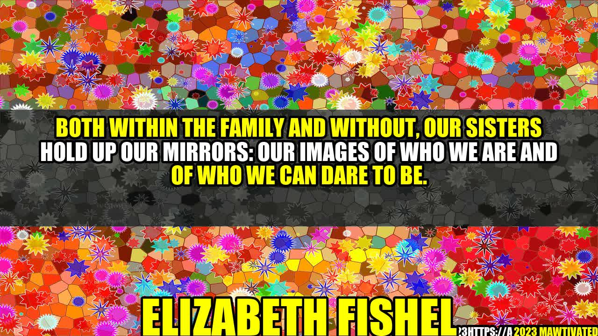

The Power of Sisterhood


A few years ago, I witnessed a powerful moment between two sisters that left a lasting impression on me. They were both in their early twenties, and the younger one was struggling to make a difficult decision. She had been offered a job in another city, but it meant leaving behind her family and friends. She was torn between pursuing her career goals and staying close to her loved ones.
Her older sister listened intently as she poured out her heart, and then she spoke up. "You've got this," she said. "I believe in you, and I know you'll make the right choice." The younger sister's eyes welled up with tears, and I could see the love and trust between them. It was a moment of pure sisterhood—the kind that makes you feel like anything is possible with the support of those who love you.
The Importance of Sisters
As Elizabeth Fishel once said, "Both within the family and without, our sisters hold up our mirrors: our images of who we are and of who we can dare to be." Sisters play a unique and important role in our lives, shaping our identities, influencing our choices, and providing support and encouragement along the way. Whether they are biological or chosen, sisters are powerful allies who can help us navigate life's challenges and celebrate its joys.
The Power of Sisterhood Across Generations
Sisterhood runs deep across generations, connecting women of all ages and backgrounds in a common bond of support and unity. Younger sisters can look up to older sisters as role models and mentors, learning from their experiences and guidance. Older sisters can benefit from the fresh perspectives and enthusiasm of younger sisters, staying current and in touch with the world around them.
Regardless of age, sisters can share in each other's triumphs and setbacks, offering a listening ear, a shoulder to cry on, and a hand to hold. They can remind us of our strengths and inspire us to be our best selves. They can challenge us to grow, to take risks, and to pursue our passions.
Examples of Sisterhood in Action
There are countless examples of sisterhood in action, both in our personal lives and in society as a whole. Women's organizations, such as the Women's March and Girls Who Code, bring together women and girls from diverse backgrounds to advocate for social change and empower each other to succeed. Social media groups, such as Facebook groups for moms or women in STEM fields, provide spaces for women to connect with others who share their interests and experiences.
On a personal level, sisters can support each other in countless ways. They can help each other through difficult times, celebrate each other's achievements, and try new things together. They can also help each other stay grounded and focused on what matters most in life.
Conclusion
- Sisters are important role models who have the power to shape our identities and influence our choices.
- Sisterhood runs deep across generations, connecting women of all ages and backgrounds in a common bond of support and unity.
- Through sisterhood, we can find the support, encouragement, and inspiration we need to navigate life's challenges and celebrate its joys.
Remember to cherish your sisters and the power of sisterhood in your life. By connecting with other women and finding your tribe, you can achieve incredible things and make a lasting impact in the world.
Hashtags
#sisters #sisterhood #empowerment #family #relationships
SEO Keywords
sisterhood, empowerment, family, relationships, bonding, role models, support, unity, generations
Article Category
Inspiration & Self-Improvement
Curated by Team Akash.Mittal.Blog
Curated by Team Akash.Mittal.Blog
Share on Twitter Share on LinkedIn